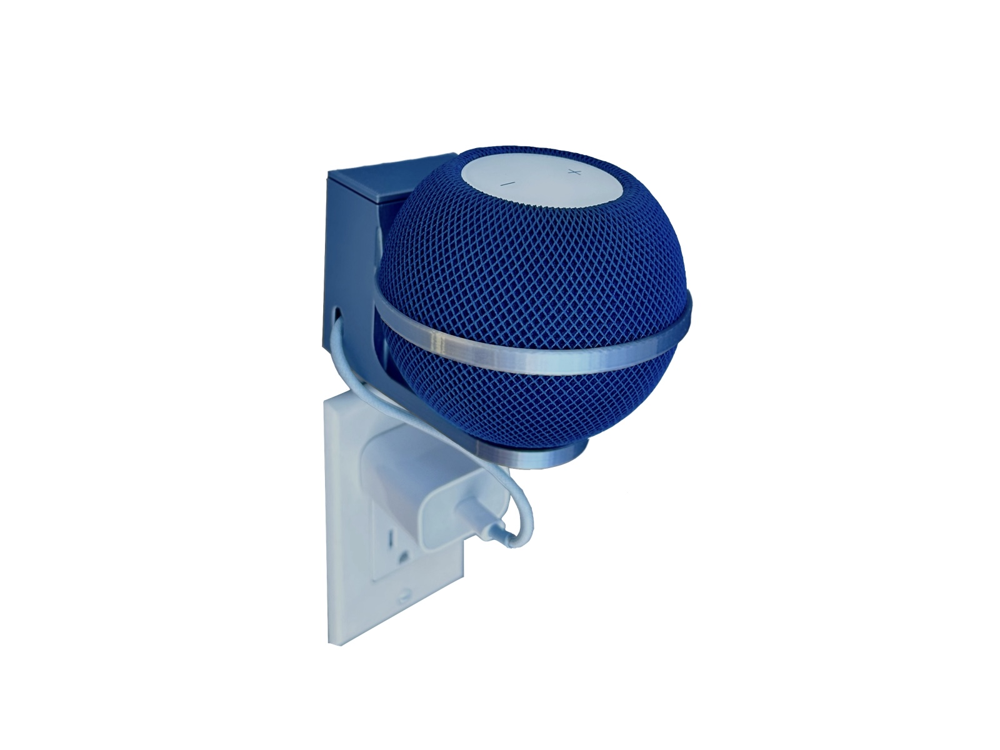
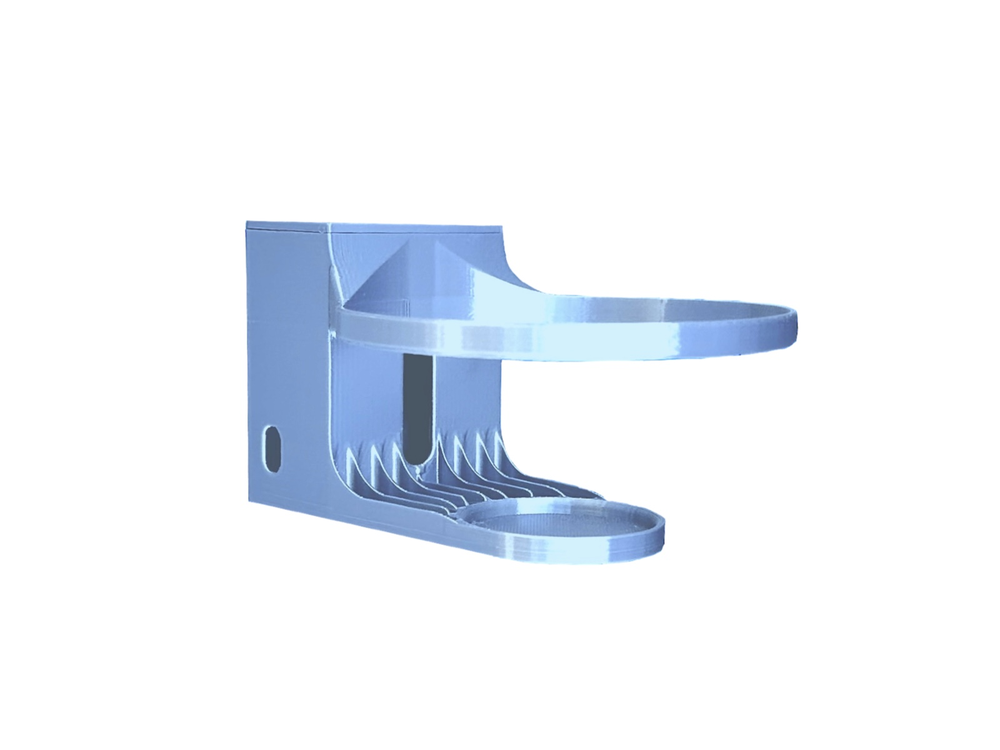
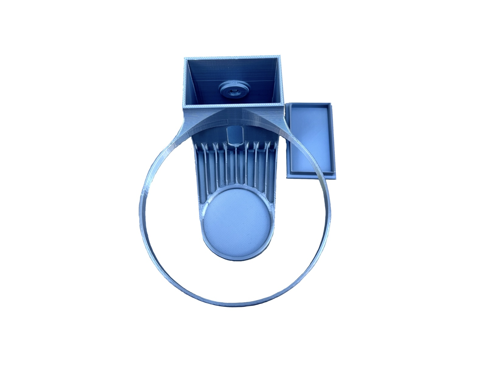
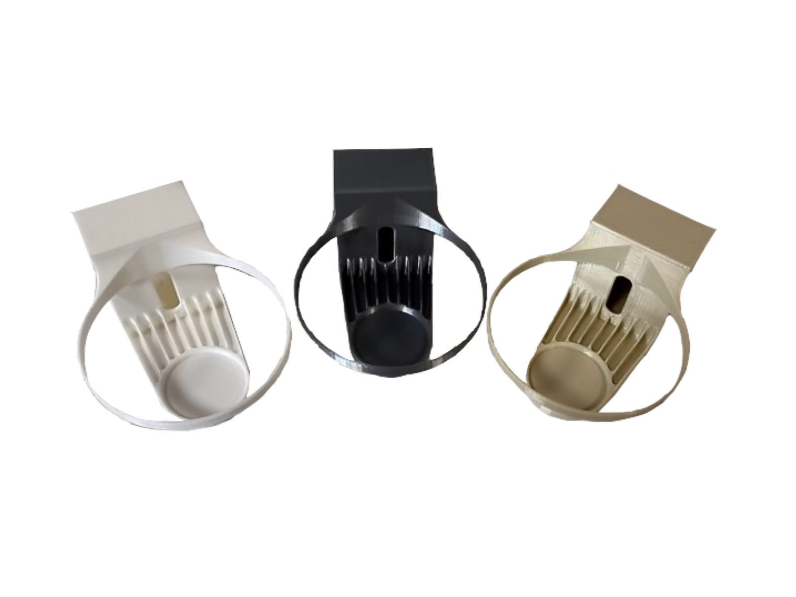
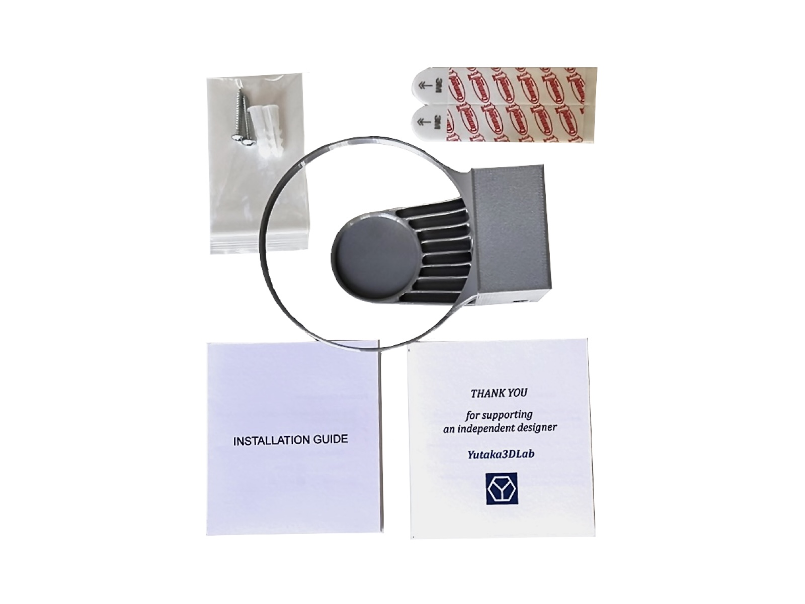

Ways to install
Use the included screw and wall anchor, or choose adhesive mounting for a no-drill setup.

HomePod & Audio
Hidden Cable Storage · Screw or Adhesive Mounting
Keep your HomePod Mini securely mounted while storing excess cable neatly behind the speaker. The compact cradle supports left- or right-side cable routing and two installation methods.
HomePod Mini, power adapter, cable, and other electronics shown are not included.
Use the included screw and wall anchor, or choose adhesive mounting for a no-drill setup.
Route the power cable toward the left or right side depending on your outlet location.
Choose White, Silver, or Beige to better match your room and HomePod setup.
Product overview
See the finished mount from several angles and how the HomePod Mini sits inside the wrap-around cradle.
Designed for everyday use
The rear compartment keeps excess cable out of sight while leaving the power lead easy to route toward the outlet.



Installation
Both methods use the same mount. The physical product includes the hardware and a printed installation guide.
Secure the empty mount with one wall anchor and one screw, then route the HomePod Mini cable and close the storage lid.
Prepare the surface, apply the adhesive strips, mount the holder, and follow the adhesive manufacturer’s required waiting-time and surface instructions before loading the HomePod Mini.
Physical product
Choose the physical mount color at Etsy or eBay. One color is included per order.

Physical product
The physical version arrives ready for either screw or adhesive installation.

Specifications
Approx. 13 cm.
Approx. 10 cm.
Approx. 7 cm.
Choose your format
Buy the finished physical mount with installation hardware, or download the digital design for your own 3D printer.
Ready-to-use product
Printed in durable PLA+, inspected, packed with installation hardware and printed instructions, and shipped ready to install.
For makers and 3D printers
Download the HomePod Mini wall-mount model and print the design yourself.
Support
Contact Yutaka3DLab and include your order platform and product name so we can help quickly.
Apple and HomePod are trademarks of Apple Inc. Yutaka3DLab is an independent designer and is not affiliated with or endorsed by Apple. Adhesive mounting performance depends on wall material, surface condition, preparation, and installation. Follow the adhesive manufacturer’s instructions.